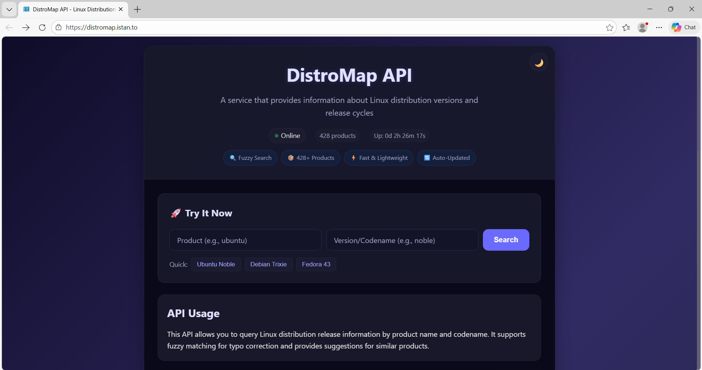

What is new in Ring 1.25
In this chapter we will learn about the changes and new features in Ring 1.25 release.
List of changes and new features
Ring 1.25 comes with the next features!
Stock Analysis application
DistroMap API
Im2ANSI Tool
MyCTiger Tool
More Samples
More RingPM Packages
Better Functions
Better RingLibCurl
Better TokensLib
Flexible Statement Separation
Using Keywords as Variables
More Improvements
Stock Analysis application
Stock analysis and simulation tool that fetches historical price data from Yahoo Finance, parses it into usable time series, calculates momentum-based returns, and simulates portfolio performance against a benchmark (QQQ).
The application is developed using Ring, RingQt, RingLibCurl & RingJSONLib

DistroMap API
A lightweight web API server built with Ring that provides Linux distribution and release information based on codenames.
Im2ANSI Tool
Convert images into beautiful ANSI/ASCII art
Developed using Ring, RingStbImage and RingFastPro
Install:
ringpm install im2ansi
Features:
Multiple Formats (Export to ANSI, ASCII, SVG, or HTML)
Flexible Sizing (Control width and/or height independently)
Color Inversion (Invert brightness for different backgrounds)
Custom Characters (Use your own character sets for unique art)
ASCII Ramps (12 built-in grayscale character ramps)
Reproducible Output (Set a seed for consistent results)
Cross-Platform (Works on Linux, macOS, and Windows)

MyCTiger Tool
Use the Ring programming language for generating and building C programs.
URL: https://github.com/ringpackages/myctiger
Usage:
Tiger <filename.tiger>
Output:
<filename.c> // Generated C source code
<filename.exe> // Executable file
Example:
Tiger {
"Hello, World! \n"
#=================================================
C `
for (int x=1 ; x <= 5 ;x++) {
printf("%d\n",x);
}
`
#=================================================
if isWindows()
"I am using Windows\n"
else
"I am not using Windows\n"
ok
}
To build and run the program
Tiger test.tiger
Output:
Hello, World!
1
2
3
4
5
I am using Windows
Generated C code (test.c)
#include "stdio.h"
int main(int argc, char *argv[])
{
printf("Hello, World! \n");
for (int x=1 ; x <= 5 ;x++) {
printf("%d\n",x);
}
printf("I am using Windows\n");
return 0;
}
More Samples
The next samples are added:
samples/UsingJSONLib/test14.ring
samples/UsingJSONLib/test15.ring
samples/UsingTokensLib/test2.ring
samples/UsingNaturalLib/advanced/lang1.ring
samples/UsingNaturalLib/advanced/lang2.ring
samples/UsingNaturalLib/advanced/lang3.ring
samples/UsingNaturalLib/advanced/lang4.ring
samples/UsingNaturalLib/advanced/lang5.ring
samples/UsingNaturalLib/advanced/lang6.ring
samples/UsingNaturalLib/tests/largecode.ring
samples/General/ListFunctions/ListFunctions.ring
samples/General/Orbital/Obital-Solar-Eclipse.ring
samples/General/Orbital/Obital-Lunar-Full-Moon-Meesus.ring
More RingPM Packages
The following packages have been added to the RingPM registry.
Argon2: Ring binding for Argon2 hashing algorithm
Bcrypt: Ring binding for the bcrypt password hashing algorithm
FTP: A comprehensive FTP client library
Ring-LibSQL: LibSQL client extension for the Ring language
UUID: Extension for Universally Unique Identifier generation and validation
Ring2EXE-Plus: Modern Packaging Options and Enhanced Compiler Control
Better Functions
addMethod(): Better Performance (Avoid recreating the HashTable)
mergeMethods(): Better Performance (Avoid recreating the HashTable)
ringvm_evalinscope(): Check the scope range before changing the scope
Better RingLibCurl
RingLibCurl is updated to supports using callbacks for different operations like handling the response data, headers, progress information and reading data for upload.
We can set the callback function using curl_easy_setopt and the option name.
The callback function can get the data using curl_get_data() or curl_get_progress_info().
Example: Using the Write Callback
load "libcurl.ring"
func main
curl = curl_easy_init()
curl_easy_setopt(curl, CURLOPT_URL, "https://ring-lang.github.io")
curl_easy_setopt(curl, CURLOPT_WRITEFUNCTION, :write_callback)
curl_easy_setopt(curl, CURLOPT_FOLLOWLOCATION, 1)
curl_easy_perform(curl)
curl_easy_cleanup(curl)
func write_callback
cData = curl_get_data()
? "Received Data Size: " + len(cData)
Output:
Received Data Size: 2756
Received Data Size: 2756
Received Data Size: 2756
Received Data Size: 2756
Received Data Size: 2756
Received Data Size: 16384
Received Data Size: 2604
Received Data Size: 16384
Received Data Size: 16384
Received Data Size: 11363
Better TokensLib
The library is updated to include the checkRingCode() function which is used for security.
Syntax:
checkRingCode(aPara) ---> 1/0 (True/False)
It is expected to be called before eval() when the input is just a Ring List.
The function does not accept code that contains Ring keywords or specific operators such as (), {}, ., ?
In other words: no statements, no function calls, no object access, and no output using the ? operator.
The function support options like safe keywords and safe operators.
Example:
load "tokenslib.ring"
func main
cCode = `mylist = [1,2,3,:one,:two,:three]`
? checkRingCode([:code = cCode]) // 1 (True)
cCode = `? "hello world"`
? checkRingCode([:code = cCode]) // 0 (False)
? checkRingCode([:code = cCode, :safeoperators="?"]) // 1 (True)
cCode = `test(1)`
? checkRingCode([:code = cCode]) // 0 (False)
? checkRingCode([:code = cCode, :safeoperators="()"]) // 1 (True)
cCode = `myobj { x=10 }`
? checkRingCode([:code = cCode]) // 0 (False)
? checkRingCode([:code = cCode, :safeoperators="{}"]) // 1 (True)
cCode = `see 'hi'`
? checkRingCode([:code = cCode]) // 0 (False)
? checkRingCode([:code = cCode, :safekeywords=[:see]]) // 1 (True)
cCode = `see new point { x=10 }`
? checkRingCode([:code = cCode]) // 0 (False)
? checkRingCode([:code = cCode, :safeoperators="{}",
:safekeywords=[:see, :new]]) // 1 (True)
Flexible Statement Separation
In this release, the language introduces support for using commas (,) as an alternative to semicolons (;) when separating statements.
Importantly, semicolons themselves are optional, so you can write code in three different styles
Example:
x=1, y=2, z=3
? x, ? y, ? z
x=10; y=20; z=30
? x; ? y; ? z
x=100 y=200 z=300
? x ? y ? z
Output:
1
2
3
10
20
30
100
200
300
Using Keywords as Variables
The next keywords could be used as variables/attributes.
This is useful when creating domain-specific languages that uses these keywords in the commands.
Again
But
Case
Catch
Done
Else
From
In
Off
Ok
On
Other
Step
To
More Improvements
Documentation - StdLib chapter - Added: AppArguments() vs SysArgv
Ring Notepad - Use checkRingCode() before using the settings file
Form Designer - Use checkRingCode() before loading the form file
RingPM GUI - Use checkRingCode() before using the package file
RingPM - Use checkRingCode() before using the package file
Ring2EXE - Use checkRingCode() before using the library file
GoldMagic800 game - Use checkRingCode() before using the level file
GoldMagic800 Levels Designer - Use checkRingCode() before using the level file
Lectures Tracker application - Use checkRingCode() before using the lectures file
libraries/jsonlib/jsonlib.ring - Better Code
ring/language/build/locatevc.bat - Prevent PATH bloat
Documentation - Revise links for CodeProject articles
NaturalLib implementation is revised (Better Performance)
Ring VM - ICO_RETFROMEVAL instruction - Better Implementation
Ring Compiler - ring_state_execute() function - check ring_state_runfile() output